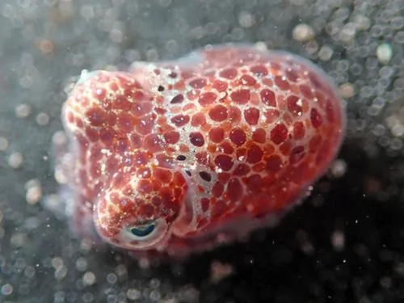

软体动物 · 动物界
大西洋耳乌贼 Sepiola atlantica

体型只有拇指大小的短尾乌贼，外套膜圆钝如耳，白天埋在沙里，夜间出来捕食小虾，寿命只有一年左右。
- 分类
- 门软体动物门纲头足纲目乌贼目科耳乌贼科属耳乌贼属
- 栖息环境
- 东北大西洋沙泥底质近岸海域，水深数十米至数百米
- 地理分布
- 东北大西洋，从挪威、英国、爱尔兰至葡萄牙和地中海西部
- 保护级别
- 尚无专门评估；常被底拖网兼捕
物种志
大西洋耳乌贼是一种小型乌贼，外套膜长约两到三厘米，连腕全长不过五厘米，体重只有几克，是乌贼家族中的小不点。它的身体短圆，外套膜后缘圆钝，像一只竖起的耳朵，因而得名耳乌贼。十条腕中有两条特化的触腕可以缩进触腕囊内，捕食时突然弹出抓住猎物。皮肤上的色素细胞让它能迅速变成沙色或灰褐色，与海底融为一体。
它分布于东北大西洋，从挪威、英国、爱尔兰到葡萄牙和地中海西部，栖息在水深几十米至数百米的沙泥底质海域。白天它常把身体埋进沙里，只露出眼睛，夜间出来活动，捕食小虾、端足类和小鱼。它体内有发光的细菌共生，能发出微光，可能用于消除自身轮廓或吸引猎物。繁殖期在春季至夏季，雌体产下数十枚卵，附着在海底物体上，孵化后不久亲体死亡，寿命约一年。它常被底拖网兼捕，但尚无专门的保护评估。
形态与习性
- 食性捕食小虾、端足类和小鱼
- 体长外套膜约两到三厘米，连腕全长约五厘米
- 体重仅数克，是体型最小的乌贼之一
- 习性白天埋沙只露眼睛，夜间外出活动
- 发光体内共生发光细菌，可发出微光
- 繁殖春夏产卵数十枚，孵化后亲体死亡
趣味知识
- 耳乌贼的身体短圆，外套膜后缘像一只小耳朵，名字就由此而来。
- 它白天把自己埋进沙里只露出眼睛，是沙底上极难被发现的伪装高手。
- 它的外套腔里共生着发光细菌，夜里能发出微弱的光，可能用来消除自己的影子。